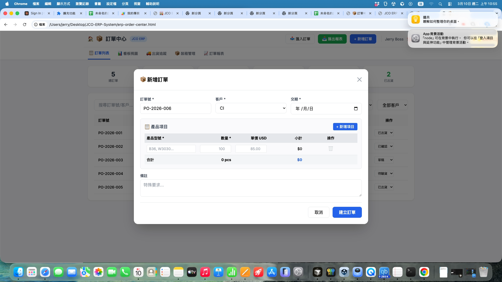

1. 功能總覽
訂單中心是 JCO ERP 的核心模組，負責管理所有客戶訂單的生命週期。
📍 進入方式
開啟 或從 Dashboard 點擊「訂單中心」
🖥️ 首頁畫面

▲ 訂單中心首頁，顯示訂單列表和統計卡片
5
Tab 分頁
3
主要按鈕
6
訂單狀態
2
Modal 彈窗
∞
訂單數量
2. Tab 功能說明
| Tab 名稱 | 功能 | 使用時機 |
|---|---|---|
| 📋 訂單列表 | 表格顯示所有訂單，可搜尋、篩選、排序 | 查看/搜尋訂單 |
| 🏗️ 看板視圖 | 拖拉式看板，按狀態分欄 | 追蹤進度、改狀態 |
| 🚚 出貨追蹤 | 管理出貨批次、船運資訊 | 安排出貨、追蹤貨櫃 |
| 📦 裝箱管理 | 設定產品裝箱規格 | 規劃裝箱數量 |
| 📈 訂單報表 | 統計圖表、績效分析 | 週報/月報分析 |
3. 新增訂單流程
步驟 1：點擊「+ 新增訂單」按鈕
在頁面右上角找到藍色的「+ 新增訂單」按鈕並點擊。
📍 按鈕位置： 頁面右上角，匯出報表按鈕旁邊
步驟 2：填寫訂單資料

▲ 新增訂單表單（Modal 彈窗）
📝 基本資訊
- — 自動產生（如 PO-2026-006）
- — 下拉選單選擇客戶
- — 選擇交貨日期
📋 產品項目
- — 輸入如 B36, W3030
- — 輸入數字
- — 輸入單價
- — 自動計算
步驟 3：新增多個產品（選用）
如果一張訂單有多種產品，點擊「+ 新增項目」按鈕增加行。
步驟 4：點擊「建立訂單」
確認資料無誤後，點擊右下角的藍色「建立訂單」按鈕。
✅ 成功： 訂單會出現在列表中，狀態為「草稿」
4. 編輯訂單
操作方式
- 在訂單列表中點擊任一訂單行
- Modal 會開啟並載入該訂單資料
- 修改需要的欄位
- 點擊「更新訂單」儲存
⚠️ 注意： 已出貨的訂單無法編輯
5. 出貨追蹤
▲ 出貨追蹤介面
🚢 功能
- • 新增出貨批次
- • 追蹤貨櫃編號
- • 記錄 ETD/ETA
- • 更新出貨狀態
📊 狀態
- 🟡 待裝櫃
- 🔵 運輸中
- 🟢 已抵達
- ✅ 已簽收
6. 裝箱管理
▲ 裝箱管理介面
用途
設定每種產品的裝箱規格（每箱幾件、箱子尺寸、重量等），方便計算出貨所需箱數和貨櫃空間。
7. 訂單報表

▲ 訂單報表介面
📊 統計數據
總訂單數、總金額、平均單價
📈 圖表分析
月度趨勢、客戶分佈
📋 明細表
可匯出 Excel